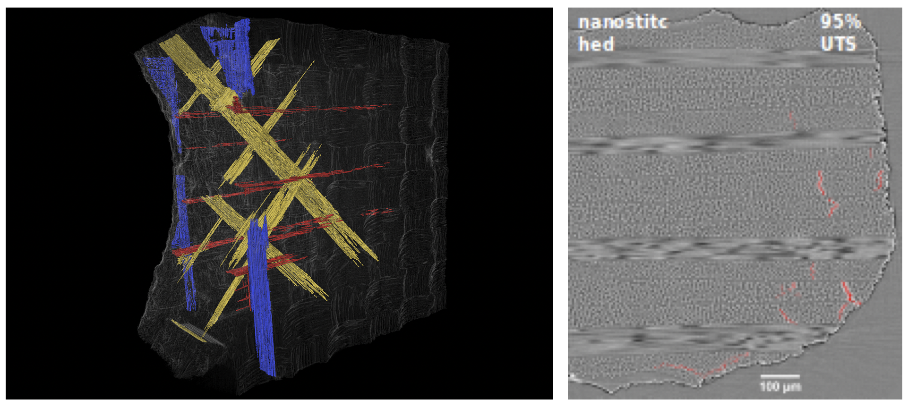

Carbon fiber laminate damage segmentation
Necstlab, a research group in the Department of Aeronautics & Astronautics, studies how to build the next generation of materials and structures. One of their projects, which focuses on materials that are composed of sheets of carbon fiber laminates, studies the effect of interlaminar reinforcement and sheet thickness. To study these effects, they construct the material, subject it a variety of loading conditions, tomographically image the damaged material, and annotate in the damaged regions. These annotations allow the researchers to see how damage progresses and which variations perform best.
The left image is an example of an annotated images (the blue, yellow, and red represent different forms of damage that occurred due to the loading). The right image is an example of the 2D scan that the left image is composed of.

Currently, the lab manually annotates these images, a time-consuming process that may also introduce significant subjectivity. The Bridge is building an automated solution to this annotation task, or what we’d call in Machine Learning, “image segmentation”. Using a neural network architecture called U-Net, originally designed for biological cell segmentation, we trained a network which performs the desired segmentation and removes the need for manual annotation.
This work was presented as a poster at Machine Learning in Materials Research Materials Day 2019 and we are currently preparing this work to submit for publication.